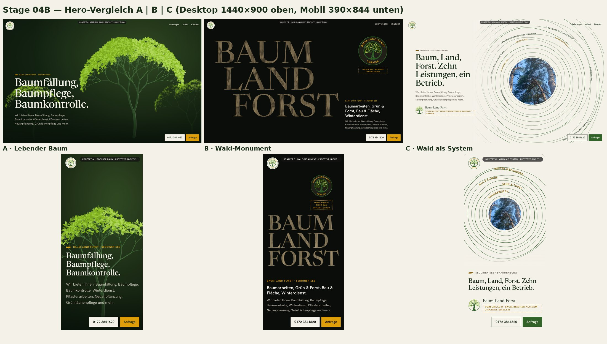
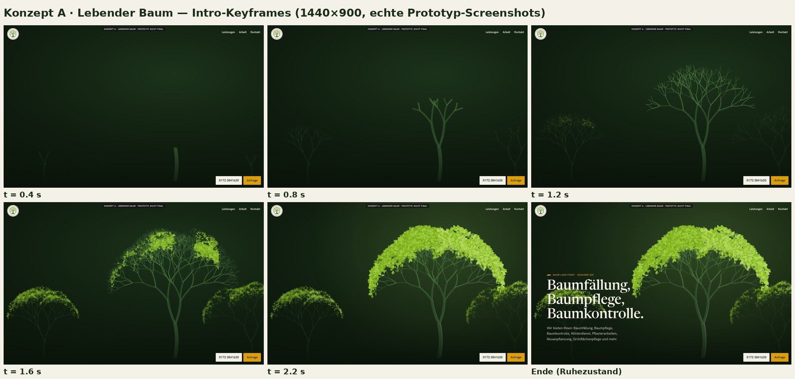
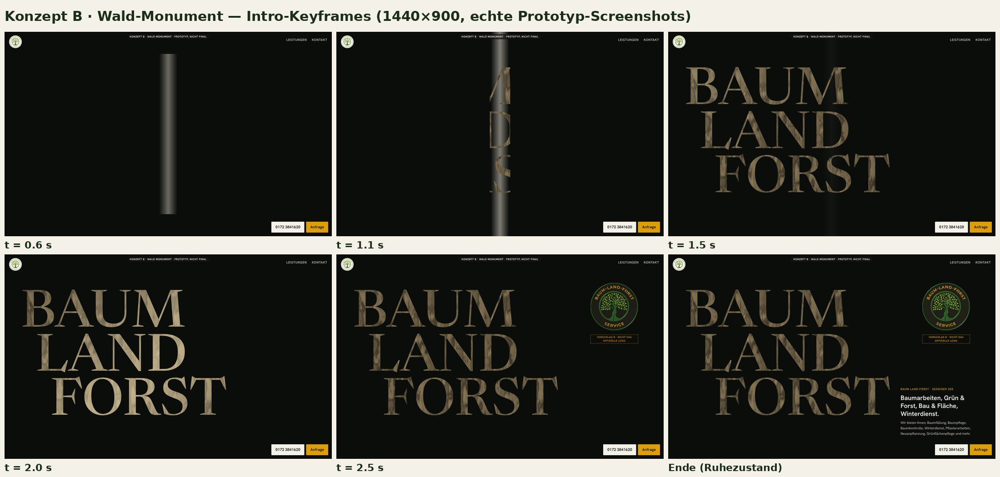
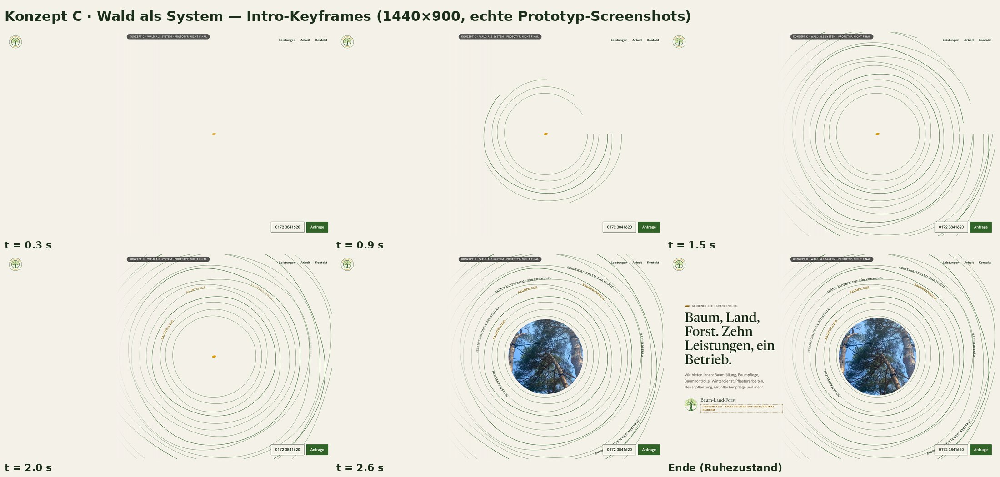
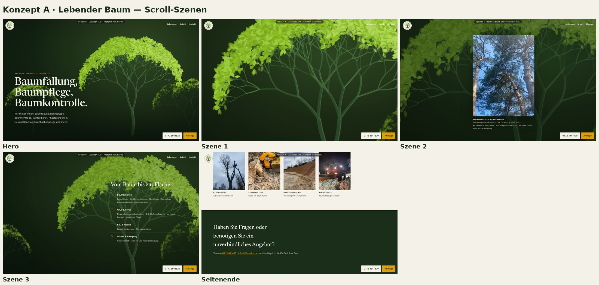
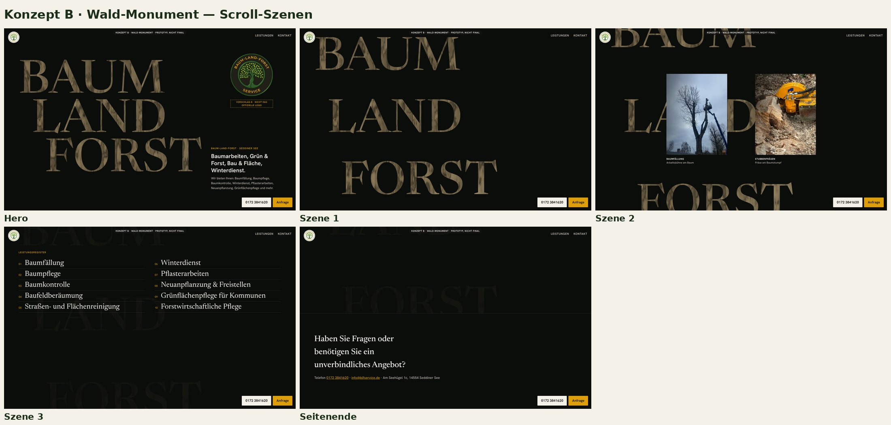
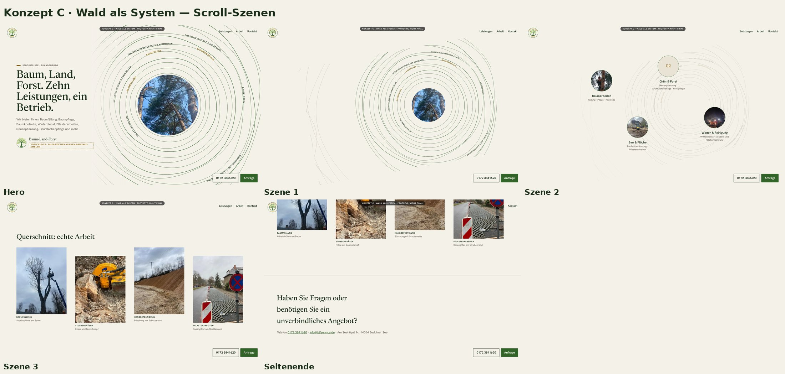

Interne Prototypen zur Auswahl einer Richtung. Nicht die finale Website. Die Startseite in src/ bleibt die Referenz. Begründung, Bewertung und offene Entscheidungen: docs/design/CREATIVE_DIRECTIONS.md.
URL-Parameter: ?t=1.5 hält das Intro bei 1,5 s an, ?t=end zeigt den Endzustand, ?rm=1 simuliert reduzierte Bewegung.






